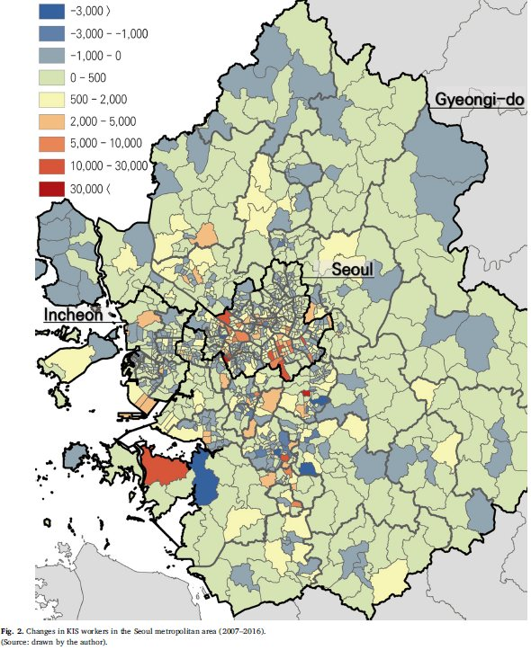

01
지식경제와 지역 산업혁신
Knowledge Economy & Regional Industrial Innovation
지식기반산업과 4차 산업혁명 관련 산업이 어디에 모이고, 왜 그곳인지를 묻습니다. 특히 비수도권 지방도시의 산업 전환 경로와 그 한계에 주목합니다. 현재 한국연구재단 과제로 지역 고용 성장이 인구 유입으로 이어지지 못하는 승수효과 유출 현상과, 이를 조절하는 도시 서비스 질 지수(K-USQI)를 연구하고 있습니다.
- 2025–지역 고용 성장의 인구 유입 연계성과 도시 서비스 질의 조절효과: 승수효과 유출이론을 중심으로. 한국연구재단 연구과제
- 2026The geography of Industry 4.0 in non-capital areas of South Korea: dualistic pathways of industrial transformation in peripheral regions. International Journal of Urban Sciences
- 2023지역별 지식재산 출원의 지리적 패턴 분석. 지역연구 39(2)
- 2020Industrial land use planning and the growth of knowledge industry: location pattern of knowledge-intensive services and their determinants in the Seoul metropolitan area. Land Use Policy 95